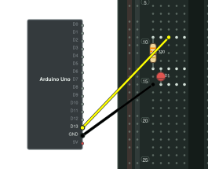

Breadkit / Guide
From circuit code to diagram.
Follow a working example from component placement to SVG output. Each diagram below was generated from the code shown beside it.
Set up
Install Ruby and the gems you need. Breadkit describes the circuit, breadkit-render draws it, and breadkit-lint checks it.
gem install breadkit breadkit-render breadkit-lint.bk.rb files run as Ruby. Only load files you trust. Use IR JSON when you need to exchange data without executing code.
Code and output: button and LED
01_led_button.bk.rb places a switch, resistor, and LED on a half-size board. The code is on the left; the generated diagram is on the right.
title "Button-controlled LED"
board :half
supply :USB, voltage: 5.0, plus: "B+1", minus: "B-1"
net :VCC, at: "B+1"
net :GND, at: "B-1"
button :SW1, at: "e10"
resistor :R1, "330", pins: %w[a12 a16]
led :D1, color: :red, anode: "b16", cathode: "b17"
wire "a10", "B+", color: :red
wire "a17", "B-", color: :black
expect do
connected "SW1.1", :VCC
connected "SW1.3", "R1.1"
connected "R1.2", "D1.anode"
connected "D1.cathode", :GND
isolated :VCC, :GND
end
at: "e10" places the switch's first pin in hole e10. pins:, anode:, and cathode: name the holes occupied by component leads. wire joins strips or rails with a jumper.
bkrender 01_led_button.bk.rb -o led.svg --theme dark
bklint 01_led_button.bk.rb
breadkit nets 01_led_button.bk.rbexpect records the intended connections. bklint compares them with the resolved circuit. View the original file.
Holes and power rails
Terminal holes use a letter from a to j and a number, such as a10. Rails use T+ / T- at the top and B+ / B- at the bottom. B+1 selects a position; B+ chooses a free hole.
| Reference | Meaning |
|---|---|
| e10 | Hole 10 in column e |
| B+1 | First hole on the bottom positive rail |
| D1.anode | The conductive strip containing D1's anode |
Offboard modules
Use offboard to place an Arduino Uno or another module beside the breadboard and connect wires to its named pins. This diagram was generated from the code shown here.
title "Arduino UNO LED"
board :half
offboard :UNO, "arduino_uno", side: :left
resistor :R1, "330", pins: %w[a10 a14]
led :D1, color: :red, anode: "b14", cathode: "b16"
wire "UNO.D13", "c10", color: :yellow
wire "a16", "UNO.GND", color: :black
expect do
connected "UNO.D13", "R1.1"
connected "R1.2", "D1.anode"
connected "D1.cathode", "UNO.GND"
end
{kind=link}
Custom modules define pin names and type: values in YAML. Types such as power, ground, clock, and data also control the pin markers in the diagram. See a module definition.